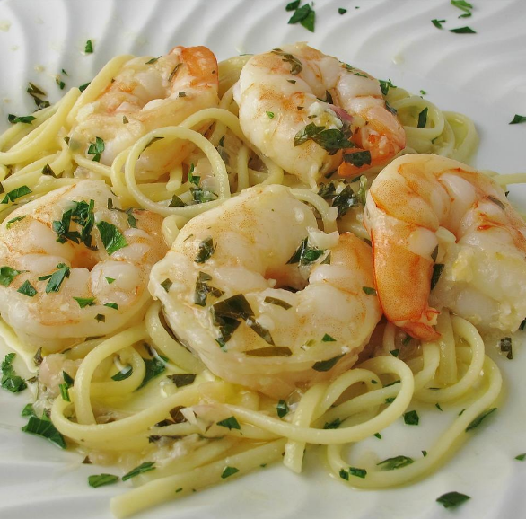

Shrimp Pasta

Description
Shrimp scampi with pasta is the ultimate seafood pasta dish. Works with any pasta; angel hair is less filling.
Nutrition value - 538 calories; protein 34.8g; carbohydrates 36.5g; fat 28.6g; cholesterol 125.7mg; sodium 743.2mg
Ingredients
- 1 (16 ounce) package spaghetti
- 1 tablespoon olive oil
- 2 cloves garlic, minced
- 1 ¼ pounds shrimp, peeled and deveined
- 1 splash dry white wine
- 1 cup heavy whipping cream
- ¼ cup chopped fresh basil
- salt and freshly ground black pepper to taste
- 1 tablespoon grated Parmesan cheese
Steps
- Bring a large pot of lightly salted water to a boil. Cook spaghetti in the boiling water, stirring occasionally, until tender yet firm to the bite, about 12 minutes.
- While spaghetti is cooking, heat oil in a large skillet over medium heat. Cook garlic until soft, but not brown, about 1 minute. Add shrimp and cook until opaque, about 3 minutes. Add wine, reduce heat, and pour in cream. Simmer until sauce starts to thicken, 3 to 5 minutes. Stir in basil and season with salt and pepper.
- Drain spaghetti and spoon creamy shrimp on top. Serve with Parmesan cheese.